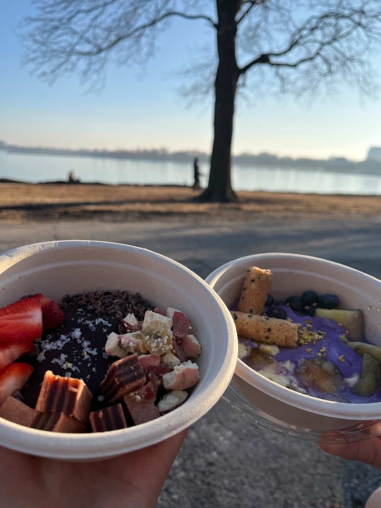

Our Story
Made from scratch
Made from scratch
with intention.
I started Second Culture by making yogurt from scratch in my college apartment because I believe that yogurt bowls can be the next big thing following the boba and matcha crazes.
Our yogurt is double strained for maximum thickness and high protein, and highlights Chinese and multicultural flavors. Each bowl is thoughtfully crafted for a unique balance of textures and flavors, from Ube Creme Brulee to Black Sesame Kinako.
Our brand name, Second Culture, is based on the double meaning of the word culture: culture as in yogurt, of course, but also bringing in my background as a Chinese-American to connect my two cultures through flavor.
Double-StrainedHigh Protein$8 / bowl4+ Toppings